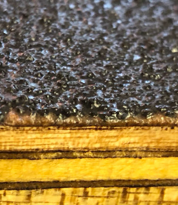

Our Marine Plywood Boards provide an anti-slip solution for external and industrial use. Applications include: bridges, ramps, surfaces scaffolding boards etc.
Our Anti-Slip Marine Plywood Flooring Boards offer a perfect solution to slip hazard areas for timber flooring such as bridges, ramps and platforms for train stations. The Marine Plywood Boards are coated in resin and impregnated with a 3mm quartz grit providing an abrasive anti-slip finish. Our specialised resin drastically increases the overall lifespan of the product, as wood tend to warp and rot if left untreated, thus vastly reducing the lifespan of the boards.
This high-quality product comprises of an 18mm thick marine plywood sheets with a 3mm quartz grit impregnated on top equating to an overall finish of 21mm.
The ideal solution to providing a DDA compliant floor to timber platforms and ramps.
Quick and easy to install onto a fully prepared existing surface or as a replacement for old surfaces.
Slip resistance that is compliant with British Standards.
Can be cut to size using normal woodworking tools.
Available in a variety of colours and dimensions.
Load-bearing qualities, making it suitable for heavy foot traffic.
We have a skilled installation team available to supply and install our products nationwide across the UK. Our team has managed many installation projects for councils, Network Rail and variety of residential clients.
It is quick and easy to install the boards yourself. We can predrill the boards at your desired measurements if required. At SureGRP, we recommend drilling at 400mm intervals, to ensure our product is securely fastened to the surface.
The product (Anti-Slip Sheet) has been extensively tested by an independent test house and has been verified to comply with current British Standards as an enhanced non slip material on a flat or sloping surface, both in wet and dry conditions. The product also meets all British and European requirements for Slip resistance, thus meeting DDA & Equality Act Regulations. Accelerated wear tests were also carried out – equating to 15 years of heavy pedestrian wear. The slip resistance value of this product is 78. British standards require the slip value to be above 36.
Do you have a project you want to discuss with us? We have supplied & installed many stair tread covers nationwide across a variety of industries (Rail, Stadia & Construction).
Contact us today by calling 01952 327577 or email us. We will be happy to help!